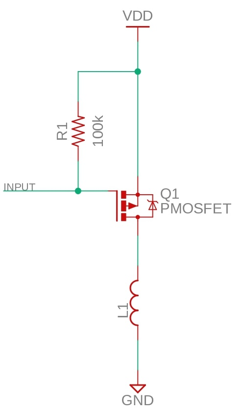
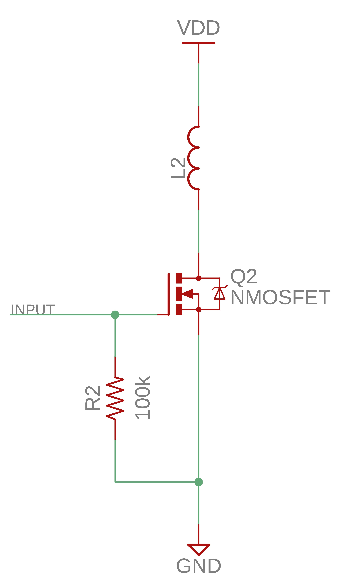

著者：根岸 孝次
ソレノイド
概要
キッカーではソレノイドを使用します。ソレノイドとは電気エネルギーを運動エネルギーに変換するアクチュエータの一種です。モーターが回転運動を実現するのに大して、ソレノイドは直線運動を実現してくれます。キックには最適というわけです。
構造・原理

- 可動鉄心
- 直線的に動く部分
- 一番重要
- フレーム
- ただの枠
- 銅線
- コイル
- ここに電流を流して磁場を発生させる
- 固定鉄心
- 可動鉄心が吸引される場所
動作の概要
- コイルに電流を流す。
- 磁場が発生する
- 可動鉄心が吸引される
- 固定鉄心に可動鉄心が吸引される
- 磁場による
- コイルに電流を流すのをやめる
- 磁場の発生が終わる
- 可動鉄心が伸びる
- 内部にあるバネによる
以上がソレノイドの伸び縮みの一連の流れです。キックもこの単純な動作で実現します。
ソレノイドを選定する際にはストローク長に注意する必要があります。10cmぐらいのものを使っておけば大丈夫です。
キック回路
原理のところでわかるようにコイルに流れる電流をOn/Offして上げるだけで済みます。しかし、ソレノイドには大きな電圧をかけ、そこそこ大きな電流を流す必要があるのでマイコンから直接On/Offすることはできません。
ソレノイドを使ったキックの力は主にソレノイドの抵抗値、電圧、通電率に依存します。（もちろんソレノイド自身の性能にも依存しますがこの資料ではそこは取り扱いません。）本来であればボールの質量や飛ばしたい距離などからソレノイドの出力を求める必要があります。ただ、ロボカップサッカーのキッカーほどでわざわざ物理計算をする必要がないのでここでは割愛します。ロボカップサッカーではキッカーの威力に制限がありますが、キッカーの威力を測定する装置で測定すればよいので、色々な電圧や通電率で試してみるのが良いと思います。
 この画像はタカハのソレノイドCB1037の仕様定格表です。
この画像はタカハのソレノイドCB1037の仕様定格表です。
これを見ると最低でもDC6Vが想定されていますね。何が言いたいかと言うとキッカーにはかなりの電圧が必要ということです。現状のロボカップサッカーでは昇圧したときの電圧制限はなかったと思うので、やればやるほど強くなります。ただ、先述の通りキッカーの威力に制限があるので注意が必要です。私のときには40Vまで昇圧していました。
昇圧回路
自作でも既製品を使用するのでも構いません。私は後者をおすすめします。私のときには40Vまで昇圧できる昇圧回路を使用しましたが、めちゃくちゃ壊れたのでおすすめしません。（設計の問題だと思うけど）パワー電源を扱う回路の開発は使わないものに比べて遥かに大変なのでおすすめしません。この資料で昇圧回路の作り方については触れません。（電源についての資料で触れるかも）
以下にいくつかおすすめの昇圧回路モジュールを紹介します。 - LM2596 DC - DC降圧コンバータ - 35Vまで昇圧できて良い - 改造すると40Vぐらいまで出力できるらしい - 使われているICが偽造品疑惑があるが動けばヨシ - 出力電流も十分 - 最大30V出力 昇圧型スイッチング電源モジュール NJW4131使用 - 30Vまで昇圧できて良い - 正規品なので信頼性がある - 出力電流も十分
スイッチング回路
昇圧した電源をソレノイドにつなぐためのスイッチング回路について解説します。こちらは自作が必要になると思います。電圧が低いマイコンから高電圧電源をスイッチングするのでやることはモータードライバと大きく変わりません。つまり、MOSFETを使うことになります。
MOSFETを使ったスイッチにはハイサイドスイッチとローサイドスイッチの2つがあります。それぞれにメリット・デメリットがあるので回路構成とともに解説します。
ハイサイドスイッチ
名前の通りハイサイド（電源と負荷（今回の場合はソレノイド）の間）側をMOSFETによってスイッチングするものになります。以下が主な特徴です。
- 長所
- グラウンド側との接続が遮断されない
- 回路全体が浮いた状態にならない
- スイッチの先でショートした場合に電源を遮断できる
- ショート検知用の電流センサが別途必要
- 比較的安全
- 回路から電源を遮断することでOffしているので、Off時に危険な動作をする可能性が比較的低い
- グラウンド側との接続が遮断されない
- 短所
- Pch MOSFETを使用する必要がある
- 高価、入手性が悪い
- Pch MOSFETを使用する必要がある
使い方と注意
ハイサイドスイッチの基本的な回路は以下のようになっています。（L1はインダクタですが、実際にはここに負荷を接続することになります。Pch MOSFETを使用しているので、MOSFETの上側の入力がソースで下側の出力がドレインです。）  この回路では、INPUTに入力される電圧に応じてMOSFETの状態が変化します。理由は回路図を見れば明らかです。（VDDはパワー電源です。）MOSFETのゲートはプルアップされているので、入力がハイインピーダンス（※1）の時には $$ V_{gs} = 0 > V_{th} $$ となるのでMOSFETはOff状態になります。（※2）
MOSFETをOnにするにはINPUTをLowにして、
$$ V_{gs} = -VDD < V_{th} $$としてやれば良いわけです。（※2）
先ほど、注意が必要と述べましたがなぜか考えていきます。MOSFETをOnにするにはINPUTをハイインピーダンスにする必要がありました。なぜ、Highではだめなのでしょうか？マイコンのGPIOとINPUTが接続されいてる前、INPUTピンはプルアップされているので \(V_{INPUT} = V_g = V_E\) となっています。ここに、マイコンのGPIOをHighの状態で接続すると、マイコンのピンに電圧\(V_E\)がかかることになります。基本的にマイコンのGPIOの耐圧は5V程度です。基本的に\(V_E > 5\)であるのでパワー電源がマイコンに流れ込み、マイコンが壊れます。一方、Lowの状態であればマイコンにパワー電源が流れ込むこと無くグラウンド側に逃げてくれるので壊れることはありません。
※1：信号線がいずれの電源やグラウンドに対しても非常に高いインピーダンスとなっている状態。インピーダンスとは交流回路における抵抗。今回の場合はいわゆる抵抗だと思ってくれれば良い。ハイインピーダンスにおける各電源、グラウンドとの間の抵抗は極めて大きく、接続されていない状態とみなすことができる。100kΩとかそういう次元ではなくもっと大きい。 ※2：Pch MOSFETを使用しているので回路図上の上側がSource、下側がDrainとなっています。また、\(V_{th} < 0\)となっています。 ※3：MOSFETにはゲート-ソース間電圧に入力して良い電圧の範囲が決まっています。今回解説している回路ではゲート-ソース間電圧の絶対値が電源電圧と一致してしまうので、電源電圧が大きいときは範囲をオーバーしないかどうか注意する必要があります。オーバーしてしまう場合には回路を工夫する必要があります。この資料では解説しないので気になる人はこの記事を参考にしてください。
ローサイドスイッチ
名前の通りローサイド（負荷（今回の場合はソレノイド）とグラウンドの間）側をMOSFETによってスイッチングするものになります。以下が主な特徴です。
- 長所
- Nch MOSFETが使える
- 安価、入手性が良い
- Nch MOSFETが使える
- 短所
- Off時に回路が浮いた状態になる
- 回路とグラウンドを切り離しているため
- Off時に回路上の電位が定まらないので他の回路と接続する際には注意が必要
- 独立した回路として運用するなら問題ない
-
スイッチングのために負荷に接続する電源より高電圧な電源を用意する必要がある
- Nch MOSFETをOnにするには
\[V_{gs} \geq Vth\]が必要であるが、On時には
\[V_s = V_E \quad V_E：負荷につなぐ電源電圧\]であるので、
\[V_g \geq V_s + V_{th} = V_E + V_{th}\]が必要になるため。
- Off時に回路が浮いた状態になる
使い方と注意
以下がローサイドスイッチの簡単な回路になっています。（ハイサイドスイッチのときと同じようにインダクタL1を負荷に置き換えて考えてください。Nch MOSFETを使用しているので上側の入力がドレイン、下側の出力がソースです。）  INPUTがLowもしくはハイインピーダンスの場合には $$ V_{gs} = 0 < V_{th} $$ となるので、MOSFETはOffとなります。一方、マイコンでINPUTをHIGH（3.3V、5V）としたときには $$ V_{gs} = 3.3, 5.0 > V_{th} $$ となるのでMOSFETはONとなります。
絶縁回路
ソレノイドはコイルと鉄心からできているので、ソレノイドが動作することでソレノイドが電圧を発生させます。ソレノイドによって起こった電圧により、ソレノイドから他の回路へ電流がノイズとして流れていきます。
ノイズは他の電子機器の動作に悪影響を及ぼす可能性があります。悪影響と一概に言ってもら色々な症状があります。ロボカップをやるうえで問題になるであろう症状だけ記しておきます。
- 電子部品の故障
- 想定されていない大きさ・方向の電流が流れ込んだり、許容以上の電圧がかかったりすることで、マイコンやセンサ、その他の部品が故障する可能性があります。
- キッカーのノイズによりマイコンが壊れる現象はロボカップ界隈では結構メジャーな不具合です。
- マイコンやセンサのリセット
- ノイズによりマイコンやセンサの動作が不安定になりリセットされてしまう可能性があります。
- 例えば、試合中にマイコンがリセットして再起動することがあります。致命的な問題につながりうるので注意が必要です。
- ADCの値がブレる
- ADCでは電圧そのものを読み取ります。ノイズによって電圧が変化してしまったら良くないのは言うまでもありません。
- デジタル信号は2値（Low, High）なのである程度のノイズに耐性があります。
パワー側（モーターやキッカーなど）では大きな電圧や大きな電流を扱うので発生させるノイズも大きいです。これがロジック側（マイコンやセンサ）に大きな影響を与えます。そのためには、マイコン側とパワー側との信号のやりとりを電気的に分けること（絶縁）が効果的です。つまり、電気以外の方法で信号を伝えたやります。具体的には光や磁気を用います。（※）
※1：絶縁を行うと言ってもロジック電源はパワー電源から生成されているので完全に絶縁するのは難しいですし、そこまでやる必要はありません。
フォトカプラ
光を使って電気信号を伝える部品です。

フォトカプラには1回路あたり4つのピンがあります。入力側の2ピンと出力側の2ピンがあります。フォトカプラの内部では、入力された信号で発光ダイオードを光らせて、その光をフォトトランジスタで受けとりトランジスタで増幅します。
 上図はとあるフォトカプラのデータシートに掲載されていたものです。左側の1,2ピンが入力側、右側の3,4ピンが出力側です。
上図はとあるフォトカプラのデータシートに掲載されていたものです。左側の1,2ピンが入力側、右側の3,4ピンが出力側です。
| ピン | 機能 |
|---|---|
| 1：アノード | 入力側の信号入力（LEDの長い端子だと思ってくれれば良い） |
| 2：カソード | 入力側のグラウンド（LEDの短い端子だと思ってくれれば良い） |
| 3：エミッタ | 出力側の信号出力（例えばMOSFETのゲートにつなげれば良い） |
| 4：コレクタ | 出力側の電源（コレクタ-エミッタ間電圧の最大値を越えないよう注意） |
上表のように接続してあげれば絶縁しながら信号伝達できます。ただ、1つだけ注意があります。入力側の発光ダイオードには流して良い電流の制限があります。"1：アノード"にマイコンからの信号を直接接続してしまうと許容電流よりも大きい電流が流れるおそれがあります。適切な大きさの抵抗を挟むことを忘れないでください。 抵抗値の計算については以下の計算式に各値を代入することで求めることができます。 $$ R = \frac{V - V_F}{I_F} $$ \(V\)：マイコンの出力電圧, \(V_F\)：発光ダイオードの順電圧, \(I_F\)：発光ダイオードの順電流 \(V_F, I_F\)はフォトカプラのデータシートに書いてあります。表現が多少異なることもあるかもしれませんが探せばどこかにあると思います。
そんなに難しくないので気軽に試してみると良いと思います。ものによっては1つのICで複数回路入っているものも存在します。複数の信号線を絶縁したいってなったときにはそういったものも探してみると良いと思います。
アイソレーター
磁気を利用して信号を伝える部品です。

正直なところ私はこの部品を1度しか使ったことが無いのである程度の解説はできても語ることはできないのでそこのところ許してください。フォトカプラに比べて高速信号の絶縁ができると耳にしたことがあります。高周波信号を入力するならこっちのほうが良いかも。自分で調べて適切な方を選んでください。それも開発の醍醐味です。
 適当に秋月電子で調べて出てきたアイソレーターを参考に載せていますが、これを例に使い方を簡単に解説します。このアイソレーターは2回路入っているものなので1つのICで2つの信号を絶縁、伝達できます。
適当に秋月電子で調べて出てきたアイソレーターを参考に載せていますが、これを例に使い方を簡単に解説します。このアイソレーターは2回路入っているものなので1つのICで2つの信号を絶縁、伝達できます。
| ピン | 機能 |
|---|---|
| \(V_{DD1}\) | 入力側の電源 |
| \(V_{IA}\) | 入力側の信号入力ピン 1回路目 |
| \(V_{IB}\) | 入力側の信号入力ピン 2回路目 |
| \(GND_1\) | 入力側のグラウンド |
| \(V_{DD2}\) | 出力側の電源 |
| \(V_{OA}\) | 出力側の信号出力ピン 1回路目 |
| \(V_{OB}\) | 出力側の信号出力ピン 2回路目 |
| \(GND_{2}\) | 出力側のグラウンド |
上表にしたがって接続すれば動きます。私が使ったときも苦労しなかったです。フォトカプラと使い方は対して変わらないです。